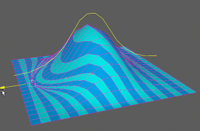
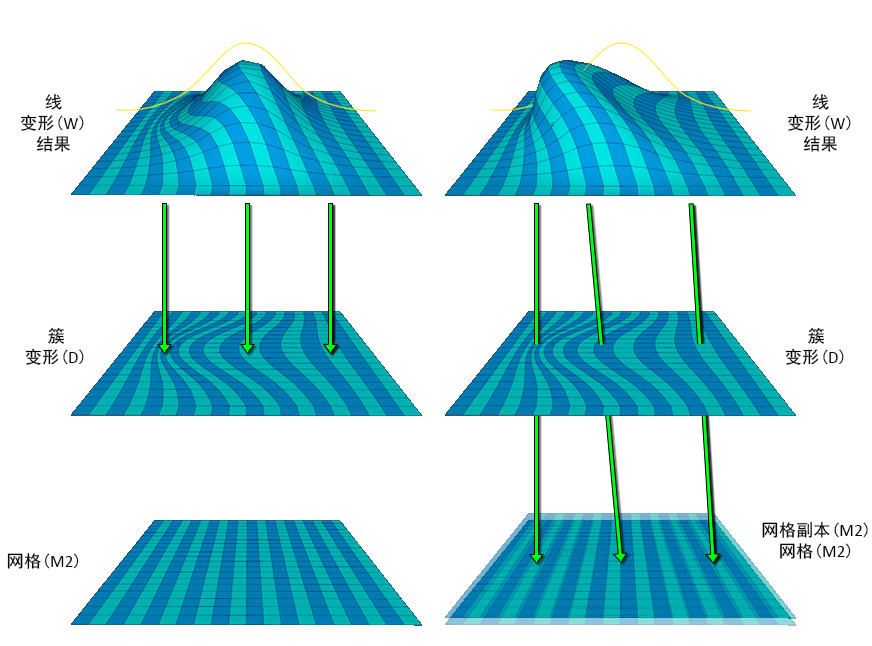
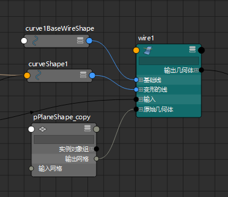

- 在“建模”(Modelling)和“绑定”(Rigging)菜单集中：“变形 > (创建)线”(Deform > (Create) Wire) >

- 在“动画”(Animation)菜单集中：“动画变形 > 打开完整的变形菜单 > (创建)线”(Anim Deform > Open Full Deform Menu > (Create) Wire) >
若要使用“线工具”(Wire Tool)创建线变形器，请参见创建线变形器。所创建的线变形器的特性取决于“线工具”(Wire Tool)的工具设置。默认情况下，会将“线工具”(Wire Tool)设置为创建不包含限制曲线的线变形器。
线设置(Wire Settings)
- 限制曲线
-
如果启用该选项，则会创建包含限制曲线的线变形器。如果禁用该选项，则会创建不包含限制曲线的线变形器。限制曲线是可用于限制变形区域的曲线。默认设置为“禁用”。
- 封套(Envelope)
-
指定变形比例因子。使用相应滑块选择介于 0.0000 到 2.0000 之间的值。值 0 指定无变形效果。默认值为 1.0000。
- 交叉效果
-
指定在变形器的其中两影响线相交的位置上变形效果的振幅。使用滑块选择介于 0.0000 到 2.0000 之间的值。默认值为 0.0000，指定平滑而非相加效果。
- 局部影响物(Local Influence)
-
指定在局部应用两条或更多影响线的变形效果。使用滑块选择介于 0.0000 到 2.0000 之间的值。默认值为 0.0000。
- 衰减距离
-
指定每条影响线的影响范围。使用滑块选择介于 0.0000 到 10.0000 之间的值。默认值为 1.0000。
变形顺序(Deformation Order)
指定变形器节点在可变形对象的历史中的位置。放置选择包括：“默认”(Default)、“之前”(Before)、“之后”(After)、“分割”(Split)或“平行”(Parallel)。
- 默认(Default)
-
将变形器放置在当前最终形状节点之前并紧邻该形状节点。
- 之前(Before)
-
将变形器放置在当前最终形状节点之前并紧邻该形状节点。“默认”(Default)和“之前”(Before)通常提供相同的放置方式。
- 之后(After)
-
作为当前最终形状节点的输出放置变形器，并创建一个新的最终形状节点。
- 分割(Split)
-
将输入变形历史分割为两个单独的变形链，从而提供源自同一可变形对象的两个最终形状。
- 平行(Parallel)
-
创建一个最终形状，该最终形状会融合对象的当前输入历史，使之与新变形器平行。
- 排除(Exclusive)
-
指定变形器集是否将处于某个划分中。如果变形器集处于某个划分中，那么该集中的点不能位于任何其他集中。结果是仅将要创建的变形器可能会影响这些点。如果启用该选项，那么“独占划分”(Exclusive Partition)和“现有划分”(Existing Partitions)选项会变得可用。默认情况下，“排除(Exclusive)”处于禁用状态。
- 独占划分(Exclusive Partition)
-
指定划分的名称。默认名称为“deformPartition”。只有当“排除”(Exclusive)处于启用状态时才可以使用。
- 现有划分(Existing Partitions)
-
指定一个现有划分。默认的现有划分为“characterPartition”。只有当“排除”(Exclusive)处于启用状态时才可以使用。
属性编辑器
您可以在“属性编辑器”(Attribute Editor)的“线”(Wire)选项卡中找到用于线变形器的其他控件。
- 绑定到原始几何体(Bind to Original Geometry)
- 可用于将某个单独的网格指定为线变形器的变形的绑定几何体。在网格已经变形（例如，通过簇变形器）但您希望将线绑定到其变形前的形状时，这很有用。（有关原始几何体属性的说明，请参见原始几何体。）
- 在下面的示例中，我们选用了一个多边形平面，对其应用簇变形器。然后，在此之上应用线变形器
绑定到原始几何体(Bind to Original Geometry)：禁用(Off) 绑定到原始几何体(Bind to Original Geometry)：启用(On) - 线变形器将在簇变形的平面 (D) 上对新点进行采样。
- 将得到一个更接近线的平面，而曲面上的顶点偏移以匹配簇。
- 如果要左右移动基础簇变形器，顶点将沿凸起的曲面来回滑动，同时大致保持相同的整体形状。

 - 线变形器将忽略簇变形的平面，并直接从提供的网格 (M2) 对点进行采样。
- 提供的网格与变形几何体必须具有相同拓扑。通常，它将是变形前的基础网格（在此示例中为我们的平面）的副本。
- 将得到一个按照原始网格的顶点变形的平面，因此，形状不仅接近线，而且也接近基础簇变形器。
- 如果要左右移动基础簇变形器，凸起会一起移动。

注： 启用此选项还可以提高性能。因此，在两种结果相同的情况下，建议启用此选项。 -
将线变形器连接到基础网格
- （可选）在对基础网格应用任何变形器之前复制该基础网格。
注： 可以将线节点绑定到拓扑相同的任何网格，但通常情况下，您会希望使用基础网格的副本。
- 将线变形器应用于对象（以及任何其他变形器）。
- 在“属性编辑器”(Attribute Editor)的“线”(Wire)选项卡中，启用“绑定到原始几何体”(Bind to Original Geometry)。
- 将基础网格副本的“输出网格”(Out Mesh)属性连接到线变形器的原始几何体(Original Geometry)属性，方法是通过节点编辑器(Node Editor)、连接编辑器(Connection Editor)，或通过使用以下 MEL 脚本：connectAttr -f <对象名称>.outMesh <线变形器名称>.originalGeometry[0]

- （可选）在对基础网格应用任何变形器之前复制该基础网格。